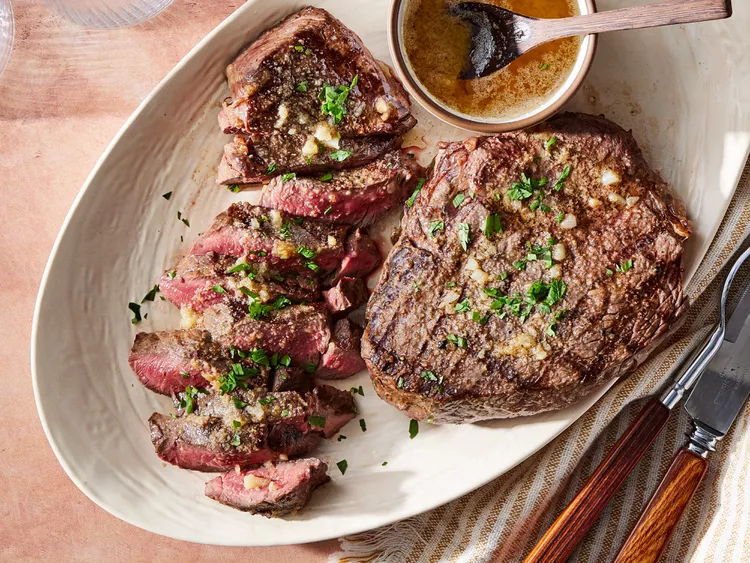

Steak
A perfectly grilled, juicy steak served with a side of garlic mashed potatoes and steamed asparagus, all drizzled with a rich red wine reduction.
Ingredients
- 1 1/2 pounds of beef sirloin steak
- 1/2 cup of red wine
- 1/4 cup of soy sauce
- 1/4 cup of olive oil
- 1 tablespoon of Worcestershire sauce
- 1 clove of garlic, minced
- 1/2 teaspoon of salt
- 1/2 teaspoon of pepper
Instructions
- In a small bowl, mix together the red wine, soy sauce, olive oil, Worcestershire sauce, garlic, salt, and pepper.
- Place the steak in a shallow dish and pour the marinade over it.
- Cover and refrigerate for at least 4 hours, turning the steak occasionally.
- Preheat the grill for high heat.
- Brush the grill grate with oil.
- Grill the steak for 5 to 7 minutes per side, or to your desired degree of doneness.
- Let the steak rest for a few minutes before slicing.
- Serve with garlic mashed potatoes and steamed asparagus.
